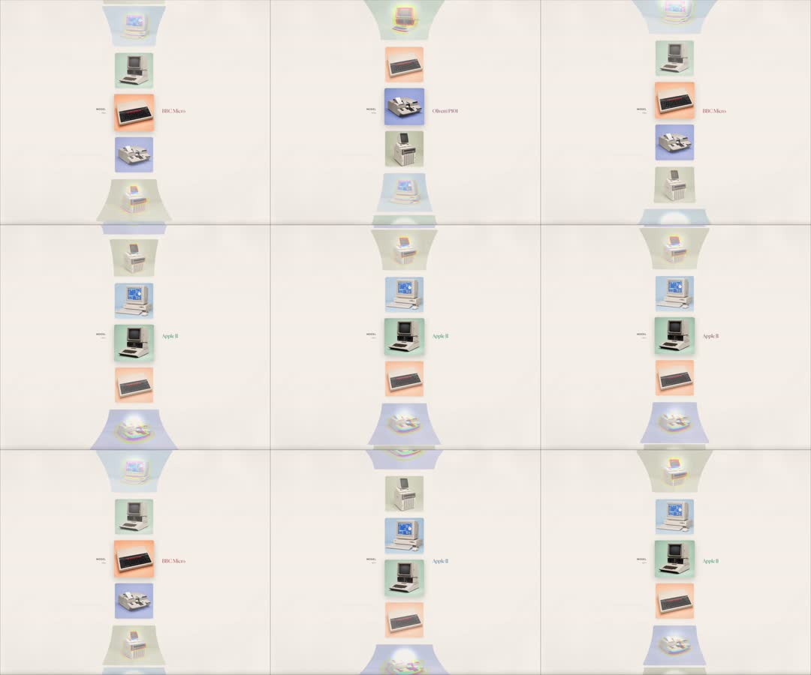

Retro computer museum carousel: a vertical infinite-scroll strip of vintage computer renders (BBC Micro, Apple II, Olivetti P101...) that travels through a 3D perspective tunnel - items at the center sit flat with pastel tiles and name labels, while items above/below warp onto receding trapezoid planes (floor/ceiling) with haze, like a cylindrical gallery.
Media
Frame-by-frame

0-100%
Continuous scroll: 5-6 computer tiles visible; center item (e.g. BBC Micro, Olivetti P101, Apple II) flat and crisp on its pastel square with 'MODEL' + name caption; items entering from top/bottom are perspective-tilted onto horizontal planes (scaleX compressed, skewed), fading into a white haze at the tunnel ends; tiles slide smoothly, each landing flat as it crosses center.
Build prompt
Rebuild this interaction 1:1: a retro computer museum carousel - a vertical infinite-scroll strip of vintage computer renders (BBC Micro, Apple II, Olivetti P101...) traveling through a 3D perspective tunnel: the center item sits flat with its pastel tile and name label, while items above/below warp onto receding trapezoid planes (floor/ceiling) with haze, like a cylindrical gallery.
## Integration
Integration: stack-agnostic spec - springs given as stiffness/damping, timed motions as duration + curve, canvas/shader notes are perf guidance only; map every value to your framework and animation library of choice.
## Scene
Vertical strip of tiles: each item a pastel square tile holding a computer render, with "MODEL" + name caption. Center item flat and crisp; items toward the ends tilt onto horizontal planes (scaleX compressed, skewed) and fade into white haze at the tunnel ends.
## Motion spec
Pattern: scroll-linked perspective (also autoplays).
- Continuous scroll ~20s per loop, linear; items wrap infinitely.
- Per item, by distance from center: rotateX increases toward the ends (flat at center), scale compresses, opacity fades into haze; labels fade in only near center.
- Each tile lands perfectly flat as it crosses center - the flat position is a snap point of the math, not of the scroll.
## Calibration
- The warp must be a continuous function of position - no thresholds, no popping between "flat" and "tilted".
- Haze (opacity + slight blur or white overlay) at both tunnel ends hides the wrap.
- ~20s loop: museum-pace. Faster turns it into a slot machine.
## Reduced motion
Strip scrolls as a plain flat vertical list, no perspective; items still wrap.
## Don't miss
- Perspective on the container + per-item rotateX; faking with 2D skew per item will not read as a tunnel.
- Center item is the only one with a fully opaque label.
- Pastel tile + render + caption anatomy is identical for every item - only the transform changes.